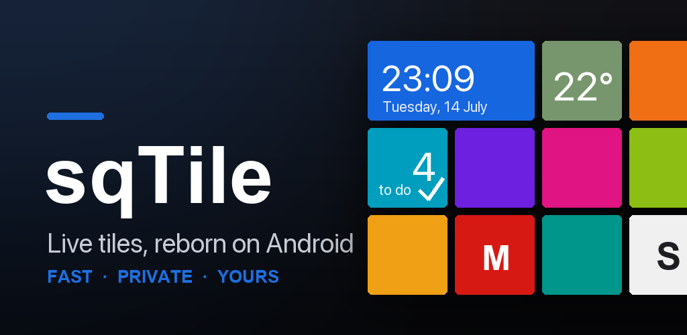
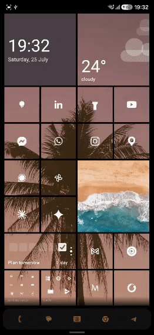

Four releases in six days: what you asked for, and what shipped
sqTile went public on 2 August. Six days and four releases later: a colour picker that stopped hiding its own buttons, two crashes with very different levels of certainty, and the release that finally answered "great launcher, now what?"

On 2 August, Google finally let sqTile onto the production channel. Six days later there had been four releases: 1.3.4, 1.3.5, 1.4.0 and 1.4.1.
That is not a plan. That is what happens when an app stops being tested by eighteen friends and starts being used by strangers, on phones I have never held, in languages I do not speak, with apps installed that I have never heard of.
Here is what people said, and what I did about it.
"I want my own colours, not your twenty"
Fair. The Windows Phone palette is beautiful and it is also somebody else's taste. If your brand colour, your car, your favourite mug is a shade that Microsoft did not ship in 2012, the grid could never match it.
So, with 1.3.0, a full colour picker: a saturation square, a hue bar, and a hex field you can type into. Pick a colour, save it, and it sits on the shelf next to the built-in accents — up to ten of your own. The picker lives in three places (the global accent, the per-tile colour badge, and the wallpaper icon accent), and it is the same panel in all three.

Then somebody set their accent to pure white, on a white background, and watched the OK and Cancel buttons disappear.
"Your dialogs vanish when I pick white"
They did. That was reported on 2 August, the day the app went public, and it was correct: Material paints a text button with the accent colour, and an accent equal to the background is a button painted in the colour of the thing behind it.
The tempting fix is to special-case white. 1.3.4 did the boring thing instead and went looking for every place the same assumption was hiding:
- 17 buttons across 10 dialogs now take a neutral grey instead of the accent.
- The date and time pickers keep the accent only where it means something — the selected day, the "today" ring, the clock hand — and route it through a helper that cannot resolve to the background colour.
- Text fields were rebuilt with a hard square Windows Phone frame: grey at rest, accent on focus. Inside the field there is no accent at all, so the text carries its own contrast.
That last one turned up a bug that had nothing to do with white: the folder rename field sits on an accent-coloured plate, so its cursor was accent-on-accent. Invisible. Always. At every colour anyone had ever picked.
"It crashed on startup"
Two separate crashes, and I want to be honest about the difference between them, because it is not the same kind of honest.
1.3.5 chased a database is locked crash at launch. Cold start was subscribing to
ten database queries at once; Room runs those on a pool of four threads; four threads
all asking to open the same database file do writes on the way in, and one of them
loses the race. The fix pins every query to a single thread — one thread, one
connection, nothing to race. Four of those queries also turned out to be running twice
for no reason, so the count went from ten to six on the way past.
What I could not do was reproduce it. Ten runs on the old code, ten clean. So the fix removes the mechanism the stack trace points at, and it cost nothing at startup (184.8 ms → 184.3 ms, measured on the same phone the same afternoon) — but "probably" is the honest word, and Crashlytics gets the final say.
1.4.1 is the opposite: fully understood, reproduced in a test.
One user's launcher crashed every single time they opened the app list. Not randomly —
every time. The cause was the name of an app they had installed. If a name begins with
a character the sorting rules ignore completely — a bidi mark, a zero-width space, a
soft hyphen — the app sorts by the rest of its name and lands in the middle of the
list, while the header logic still files it under #. Two # headers in one list, two
identical keys, and the list throws during measurement, somewhere no screen can catch
it.
The same bug was sitting on accents, quietly: Äpfel sorts between Apple and
Avast, which gave you two A headers. The fix stopped scanning the sorted list and
started bucketing it, so a letter can only produce one header no matter what the
collator does with it. That code had been untouched since the very first version of the
app — it shipped broken in every release sqTile has ever had.
One user in Crashlytics. For that one user, the launcher was unusable.
"Great launcher. I have no idea what to do with it."
This was the one that stung, because more than one tester said it, in slightly different words, without talking to each other. That is the point where it stops being an opinion and starts being a fact about the app.
Four symptoms, all real: nobody discovered the long-press, everyone got lost in edit mode, nobody knew the special tiles existed, and the badges in the corners of a selected tile meant nothing to anyone.
1.4.0 answers all four.
A fresh install now opens on a working home screen. Clock, weather, to-dos, the store, settings, and a dock with your dialer, messages, browser and camera already in it. This is the biggest lever in the whole release, because it changes the first task from "build something out of nothing" into "change the thing you can see" — and those are not the same job. It also means you see that tiles other than app icons exist, which no amount of instruction text ever achieved.
Getting there was less glamorous than it sounds: the launcher has to resolve which app is actually your dialer, and on Android 11 and up it can only see apps it has declared an interest in. Verified on three ROMs, including a ColorOS phone on Android 11, which is exactly where that would have quietly failed.
Press and hold an empty spot and you get a menu. Four flat tiles — add a tile, edit, wallpaper, settings — unfolding radially from wherever your finger is, then settling into a square block. Every other Android launcher answers a long-press with a menu. sqTile answered it by dumping you into an unnamed edit mode. People arrived with a working mental model and the app refused to honour it.
Edit mode says what it is. The bar grew from one row to two: a line of plain language on top, and underneath it four equal chips with an icon over a label — add, undo, settings, done. It used to be a labelled chip, a bare circle and a text button sharing a row, and the bare circle was the only way to add a tile. Nobody recognised it. The first time you select a tile, its four corner badges now animate in one at a time, which walks your eye into each corner far better than any sentence naming them could.

Three flat dashes under the status bar tell you there are three pages, and which one you are on. Nothing in the app had ever said so. Worse, the old first-run hint paired a swipe-right pictogram with text about the app list and the same pictogram with text about the dashboard — one of those was wrong, in five languages, since launch. The fix was to stop naming directions in words at all.
None of this is a feature you can put on a store listing. All of it is the difference between somebody keeping the launcher and somebody uninstalling it on day one.
"So when do you start nagging me for a rating?"
You will get asked at most three times, ever, and only if the app has actually been useful to you.
There is no "do you like sqTile?" dialog, because Google's own guidelines forbid pre-prompts — and a mood check that filters out unhappy people is exactly the sort of thing that makes store ratings worthless. Instead the app keeps a score: one point for a to-do you ticked off, two for a habit day you completed, two for a reminder you finished from its notification. Three points a day, maximum, so one productive Tuesday does not look like a week of use.
Ask number one needs eight points, four separate active days, a week since install, and sqTile actually being your home screen. The next ask costs twice as much and fourteen days of silence. After three, never again.

Thank you
Seriously. This release run exists because of people who did unpaid work on my app.
To the eighteen closed testers who used it daily for two weeks and answered my "what did you actually do in the app today?" messages honestly rather than kindly — the seeded home screen, the long-press menu and the readable edit bar are all yours. I had a strong opinion about that entry barrier. You were right and I was wrong.
To whoever set their accent to white on 2 August and told me instead of shrugging. To the person whose app list crashed every time, whose crash report carried enough detail to find a bug that had been in the app since day one.
And to the tester on a Pixel who reported the same bug twice. A notification badge that refused to go back to zero looked fixed in 1.2.4; it wasn't, and rather than give up they came back and told me the count stayed stuck no matter which counting mode they picked. That one detail killed two of my three theories in a sentence and left the real one: Android had quietly killed the listener binding without telling the app, so sqTile kept serving numbers from a connection that no longer existed. 1.3.0 taught it to notice that and reconnect. Confirmed clear on their phone.
A bug report that comes back a second time is worth ten that stop after the first reply.
And to everyone who installed this thing, set it as their home screen, and let a one-person launcher run their phone all day. That is a lot of trust for version 1.4.
What's next
Icon packs are in development — point sqTile at a pack you already own and let it feed the tiles. After that, a full weather screen, because tapping the weather tile and landing on the dashboard has never been the right answer. Widgets on the dashboard are still a question mark rather than a promise.
The backlog is on the front page and I keep it current. If something you need is not on it, tell me — that has changed the order more than once.
sqTile is on Google Play, in English, Polish, German, Italian and Ukrainian. Free, with a single one-time Pro unlock and no subscription. No ads, no analytics SDK, no account.